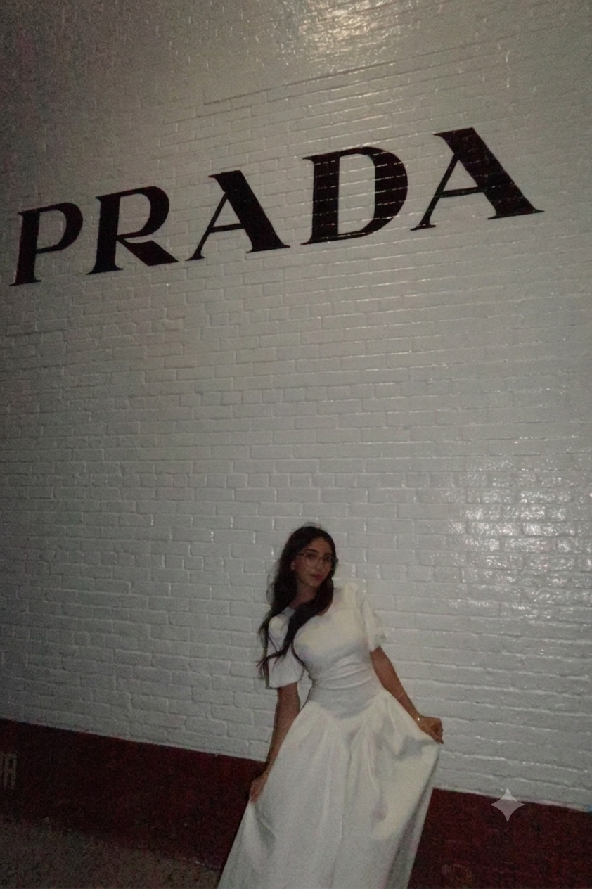

Software Engineer • Creative Technologist
Eiman
Yousaf
Building elegant digital experiences through code, design, and creativity.

01
About
I’m a Computer Science graduate interested in software engineering, web development, UI/UX design, automation, and building polished digital experiences that feel useful, clean, and intentional.
Outside of technology, I love photography, fashion, beauty, traveling, and exploring New York City. My creative background influences the way I design, problem-solve, and build digital experiences.
02
Technical Skills
Java
Python
C++
HTML
CSS
JavaScript
SQL
GitHub
Excel
01
Software
Clean, organized, functional digital tools.02
Design
Modern layouts with an editorial, polished style.03